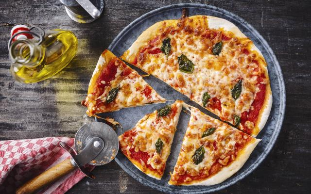

Pizza

ingrediënten
- halve beker warm water
- 1 theelepel zuiker
- 2 theelepels gist
- 7 cups bloem
- 2el olie
Bereidingen
- Maak eerst je pizzadeeg.
- Verwarm de oven voor op 250°C en bekleed 2 bakplaten met bakpapier of bestrijk ze met olijfolie. Rol het
pizzadeeg uit en snij hier 4 bodems van ongeveer 25cm diameter uit. Leg de pizzabodems op de bakplaten.
- Bestrijk de bodems royaal met tomatensaus en strooi hierna geraspte kaas en basilicumblaadje over de pizza.
Kruid af met peper en zout en besprenkel met olijfolie.
- Bak de pizza’s ongeveer 25 minuten in het midden van de oven. Snij de pizza in stukken met een pizzaroller
en serveer.